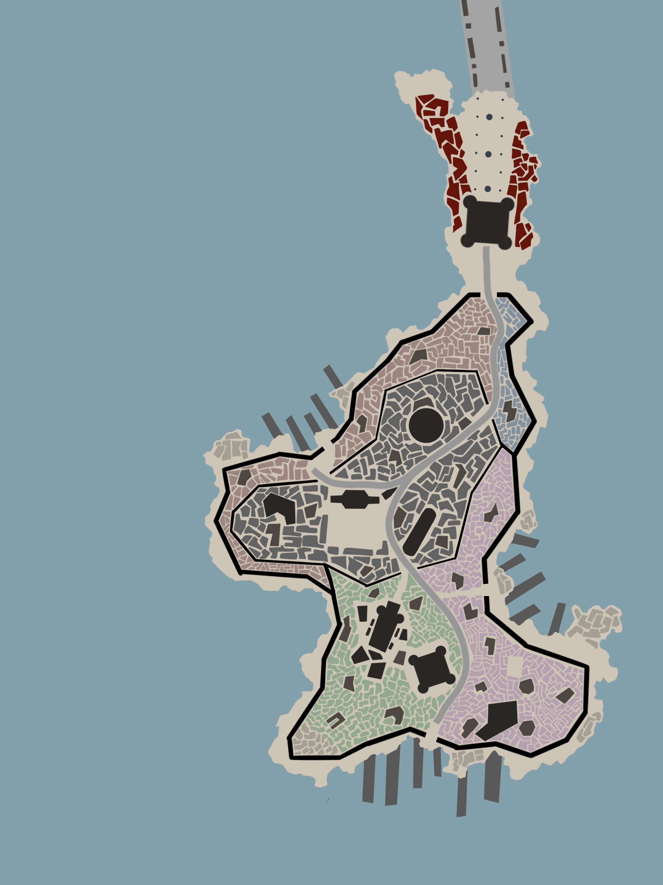

Tychera
Contenuti:
Il Regno di Tychera affonda le sue radici nella Città di Tychera, fondata intorno al 256 DD. Situata su un’isola di grandi dimensioni, Tychera nacque come una città compatta e unita, dalla forte identità comunitaria. Sin dalla sua fondazione, fu governata da cinque casate principali, che, pur alternandosi nel potere, mantennero un rapporto di armonia e collaborazione.
Per circa un secolo, Tychera si concentrò sull’espansione all’interno della propria isola, completando l’occupazione
totale del territorio insulare. In parallelo, iniziò a sviluppare una solida flotta navale, sia per il commercio sia per
la difesa. Questa combinazione di unità interna e forza economico-militare portò Tychera a evolversi in una Repubblica
marittima.
Dopo aver consolidato la propria posizione sull’isola, Tychera rivolse lo sguardo verso le coste del continente
settentrionale. Con la scusa di costruire un ponte che collegasse l’isola al continente, intraprese una campagna di sottomissione
dei piccoli villaggi costieri. Questi villaggi vennero inglobati e il ponte, simbolo di dominio e ambizione, fu effettivamente
costruito, sancendo il primo passo nell’espansione continentale di Tychera.
L’espansione tycheriana proseguì per diversi secoli, portando la Repubblica a scontrarsi con regni come Mihíl, Nodari e
Moera
, oltre ad altri piccoli
regni ormai scomparsi. Entro il 1700 DD, Tychera controllava vaste porzioni di terraferma, tra cui metà dell’attuale Moera, la parte meridionale del
Nodari e gran parte dell’ex territorio di Mihíl.
Tuttavia, la gestione di questi territori si rivelò complicata. Le rivolte locali, la scarsità di
risorse e le difficoltà logistiche spinsero Tychera, intorno al 1700 DD, a cambiare strategia. Iniziò a vendere i territori continentali ai regni confinanti,
come Moera, Nodari e Mihíl, che desideravano espandersi. Questa decisione permise a Tychera di accumulare immense ricchezze e di consolidare il controllo sulla
regione circostante al ponte.
Concentrandosi nuovamente sul mare, Tychera rafforzò la propria influenza sulle isole dell’Arcipelago della Pinna, inizialmente attraverso
accordi commerciali che subordinavano le economie locali al controllo tycheriano. Progressivamente, molte di queste isole entrarono a far
parte del regno, sia attraverso conquiste dirette sia tramite trattati vantaggiosi.
Dal 1800 DD al 2176 DD, Tychera si espanse ulteriormente,
conquistando piccole isole e territori sparsi in tutto il mondo di Talagi. Uno degli esempi più significativi di questa espansione marittima fu la
partecipazione alla Grande Guerra contro l’Impero degli Ashari (2020-2029 DD).
L’Impero degli Ashari, nel tentativo di dominare le rotte commerciali del nord, rappresentava una minaccia diretta agli interessi di
Tychera. In risposta, il regno intervenne, aiutando il vicino
Regno di Moera
a resistere all’invasione ashari. La flotta tycheriana liberò
molte isole conquistate dagli Ashari e lanciò una campagna offensiva che si spinse fino al territorio imperiale.
Grazie a queste vittorie,
Tychera stabilì il proprio controllo su diverse regioni, creando una rete di protettorati e repubbliche nominalmente indipendenti, ma di fatto
subordinate al regno. Questo periodo segnò l’apice del potere tycheriano come grande potenza marittima.
Oggi, Tychera è un regno prospero e cosmopolita, con una forte economia basata sul commercio e una presenza navale dominante. Sebbene il suo territorio sulla terraferma sia limitato, la sua influenza si estende attraverso una fitta rete di rotte marittime e alleanze strategiche. Il grande ponte che collega l’isola al continente rimane un simbolo del passato ambizioso di Tychera e del suo continuo desiderio di unire e controllare.
Stemma di Tychera
Mappa della
città di Tychera